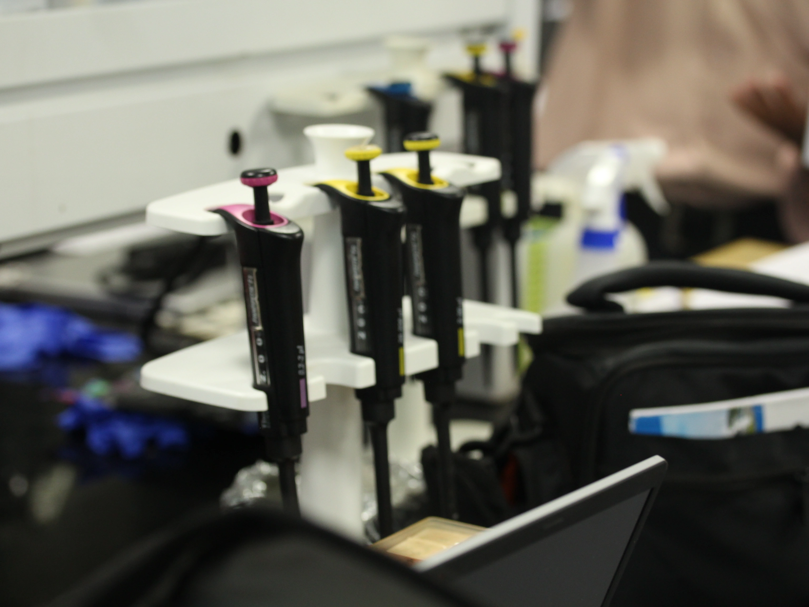
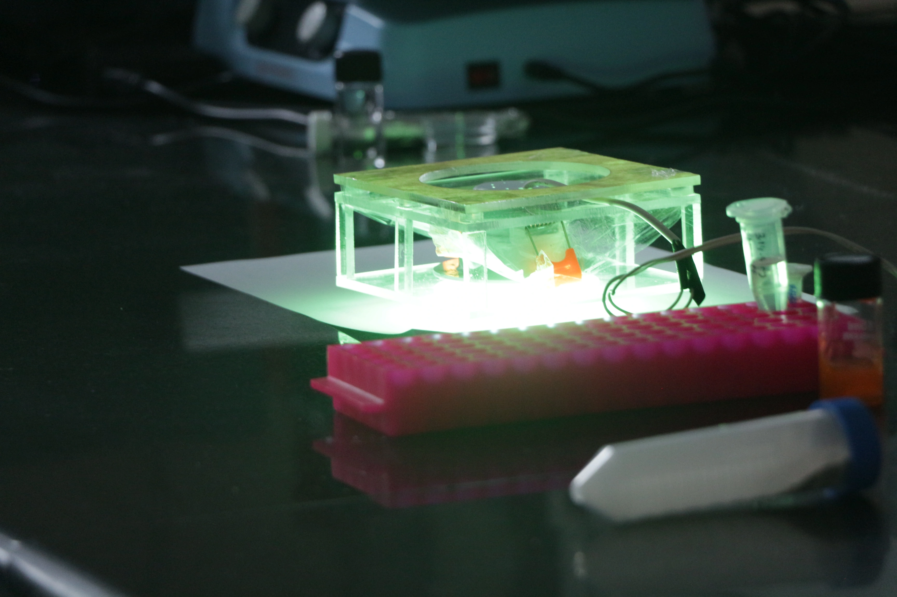
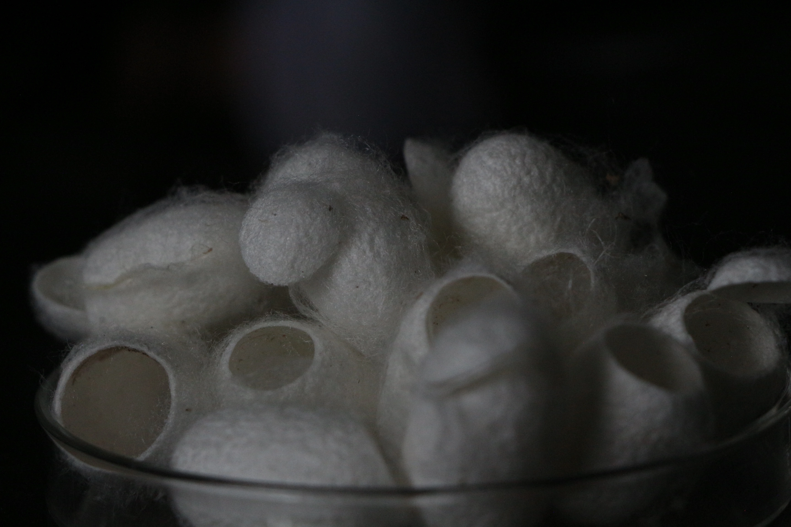
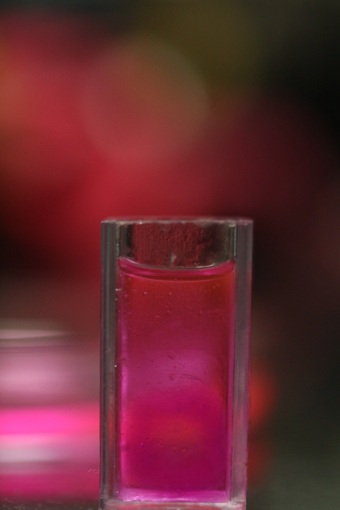

Our core research focuses on the design, processing, and characterisation of tissue-specific decellularised extracellular matrix (dECM) biomaterials. By preserving native biochemical composition and microenvironmental cues, we develop biologically instructive materials that guide cell behaviour and tissue maturation.
The dECM approach maintains the native proteome, glycosaminoglycans, and growth factors of source tissues — providing bioinks that actively direct cellular organisation and differentiation in a tissue-specific manner.

We employ extrusion-based and hybrid 3D bioprinting approaches to fabricate cell-laden constructs using dECM-based bioinks, with an emphasis on structural fidelity and biological functionality.
Our bioprinting strategies are designed to recapitulate the spatial organisation of native tissues — enabling the fabrication of multi-layered, cell-laden constructs that closely mimic the architecture and mechanical properties of target tissues.

The lab develops physiologically relevant in vitro tissue and organ models that closely mimic native tissue architecture and function, enabling studies in regeneration, disease modelling, and therapeutic screening.
These models serve as powerful tools for drug discovery and toxicology studies, offering a more predictive alternative to conventional 2D cell culture and providing a bridge toward clinically translatable tissue engineering solutions.

By integrating biomaterials science, additive manufacturing, and regenerative medicine, our research addresses challenges in scalability, biological performance, and clinical relevance of biofabricated tissue constructs.
A landmark achievement is the development of a biomimetic corneal hydrogel, which received a ₹3 Cr grant from the Ministry of Education for clinical translation in collaboration with LV Prasad Eye Institute, Hyderabad.
Our research outcomes have received recognition from national media, highlighting the translational impact of our work in tissue engineering and regenerative medicine.
Media coverage highlighting the development of advanced biomaterials and biofabrication strategies at the BioFabTE Lab.
Video feature discussing tissue-specific hydrogel development and its potential in regenerative medicine.
Coverage highlighting the development of a novel hydrogel system aimed at corneal tissue regeneration by researchers at IIT Hyderabad's BioFabTE Lab.
Read full articleCoverage of IIT Hyderabad's innovation initiatives and student-driven research addressing real-world challenges in biomedical engineering and related fields.
Read full article